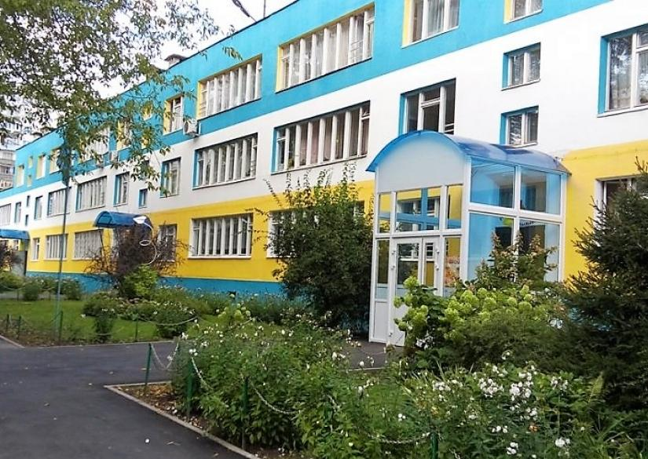
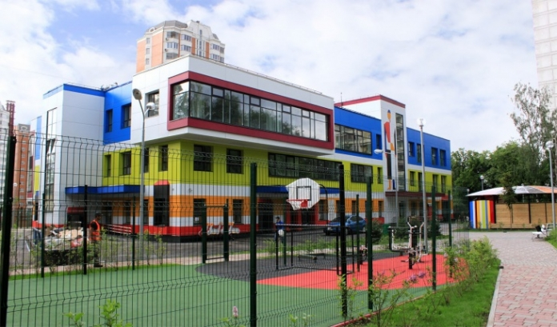
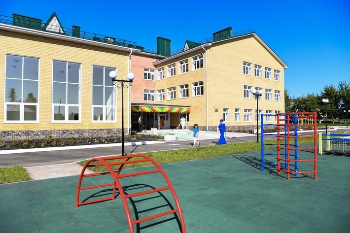
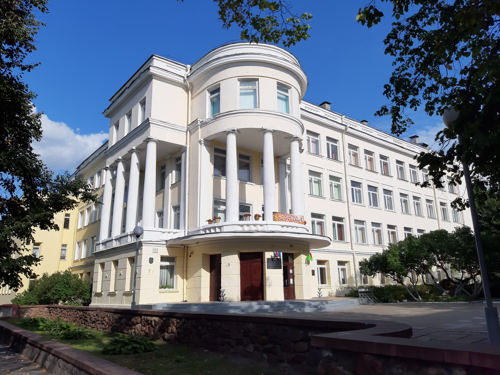

Филиалы наших школ: образование в любом городе рядом с вами
Школы BigBen - это не просто учебные заведения, это места, где дети могут получить качественное образование, найти новых друзей и раскрыть свои таланты. Мы предлагаем обучение в филиалах наших школ, расположенных в разных городах России. Наши филиалы оснащены всем необходимым для комфортного обучения, а опытные педагоги всегда готовы помочь учащимся в достижении их образовательных целей.
Школа в Томске

 Адрес: ул. Ушинского, 5, к. 1
Адрес: ул. Ушинского, 5, к. 1 Телефон: 8-927-234-54-28
Телефон: 8-927-234-54-28 Почта: schoolBigBen@mail.ru
Почта: schoolBigBen@mail.ru
“Томский центр дошкольного образования” - одно из ведущих учебных заведений в Томске, специализирующееся на обучении детей английскому языку и предлагающее широкий спектр образовательных программ для дошкольников.
Школа в Кемерово

- Адрес: ул. Ушинского, 5, к. 1
- Телефон: 8-927-234-54-28
- Почта: schoolBigBen@mail.ru
“Кемеровский детский сад-школа” - уникальное образовательное учреждение, предлагающее обучение по программе дошкольного образования с акцентом на изучение английского языка.
Школа в Новосибирске

- Адрес: ул. Ушинского, 5, к. 1
- Телефон: 8-927-234-54-28
- Почта: schoolBigBen@mail.ru
"Новосибирский детский сад с английским уклоном” - это современное образовательное учреждение с опытными педагогами и уютной атмосферой. Здесь дети смогут изучать английский язык в игровой форме, что поможет им быстрее освоить его.
Школа в Барнауле

- Адрес: ул. Ушинского, 5, к. 1
- Телефон: 8-927-234-54-28
- Почта: schoolBigBen@mail.ru
"Барнаульский центр дошкольного образования с английским уклоном” предлагает программы для детей от 2 до 7 лет. Занятия проводятся в небольших группах, что позволяет уделить максимум внимания каждому ребенку.
Школа в Красноярске

- Адрес: ул. Ушинского, 5, к. 1
- Телефон: 8-927-234-54-28
- Почта: schoolBigBen@mail.ru
Красноярский центр дошкольного образования “Английский с детства”- это место, где ваш ребенок сможет изучать английский язык с раннего возраста. Здесь работают опытные педагоги и создана дружелюбная атмосфера для обучения.
Школа в Санкт-Петербурге

- Адрес: ул. Ушинского, 5, к. 1
- Телефон: 8-927-234-54-28
- Почта: schoolBigBen@mail.ru
"Школа Санкт-Петербурга" - центр дошкольного образования, который специализируется на изучении английского языка. Здесь дети могут получить качественные знания и навыки, необходимые для дальнейшего успешного обучения в школе.